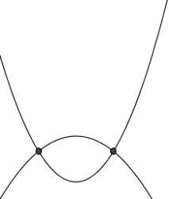

| Choisissez votre langue ! | Choose your language ! |
Intersection de deux coniques (théorie)
Soient donc deux coniques C1 et C2 dans le plan euclidien.On peut toujours supposer que nous travaillons dans un repère où C2 a été .
Dans un tel repère C2 a une équation de l'un des types suivants :
- \( \displaystyle \frac{x^{2}}{a^{2}} + \frac{y^{2}}{b^{2}} = 1 \)
- \( \displaystyle \frac{x^{2}}{a^{2}} - \frac{y^{2}}{b^{2}} = 1 \)
- \( \displaystyle 2{py} = x^{2} \)
Ax2+Bxy+Cy2+Dx+Ey+F=0
Supposons par exemple que C2 soit une ellipse, on a alors :
\( \displaystyle y = \pm \sqrt{1 - \frac{x^{2}}{a^{2}}} \)
Les abscisses des points d'intersection sont donc solutions de l'équation\( \displaystyle \pm \sqrt{1 - \frac{x^{2}}{a^{2}}}\left( {{Bx} + E} \right) = - Ax^{2} - C\left( {1 - \frac{x^{2}}{a^{2}}} \right) - {Dx} - F \)
Soit en élevant au carré\( \displaystyle \left( {1 - \frac{x^{2}}{a^{2}}} \right)\left( {{Bx} + E} \right)^{2} = \left( Ax^{2} + C\left( {1 - \frac{x^{2}}{a^{2}}} \right) + {Dx} + F \right)^{2} \)
On a donc une équation du type P(x)=0 où P est un polynôme de au maximum.Le lecteur constatera par lui-même que la même conclusion vaut quand C2 est un hyperbole ou une parabole.
En conclusion :
Intersection of two conics (theory)
Let C1 and C2 be two conics in the Euclidean plane.We can always assume that we are working in a frame where C2 has been .
In such a frame C2 has an equation of one of the following types:
- \( \displaystyle \frac{x^{2}}{a^{2}} + \frac{y^{2}}{b^{2}} = 1 \)
- \( \displaystyle \frac{x^{2}}{a^{2}} - \frac{y^{2}}{b^{2}} = 1 \)
- \( \displaystyle 2{py} = x^{2} \)
Ax2+Bxy+Cy2+Dx+Ey+F=0
Suppose for example that C2 is an ellipse, then we have:
\( \displaystyle y = \pm \sqrt{1 - \frac{x^{2}}{a^{2}}} \)
The abscissas of the points of intersection are therefore solutions of the equation\( \displaystyle \pm \sqrt{1 - \frac{x^{2}}{a^{2}}}\left( {{Bx} + E} \right) = - Ax^{2} - C\left ( {1 - \frac{x^{2}}{a^{2}}} \right) - {Dx} - F \)
Or by squaring\( \displaystyle \left( {1 - \frac{x^{2}}{a^{2}}} \right)\left( {{Bx} + E} \right)^{2} = \left( Ax ^{2} + C\left( {1 - \frac{x^{2}}{a^{2}}} \right) + {Dx} + F \right)^{2} \)
We therefore have an equation of the type P(x)=0 where P is a polynomial of at most.The reader will see for himself that the same conclusion holds when C2 is a hyperbola or a parabola.
In conclusion :
Il y a donc a priori 5 cas possibles :
- Aucun point d'intersection (intersection vide)
- Un unique point d'intersection
- Deux points d'intersection
- Trois points d'intersection
- Quatre points d'intersection
There are therefore a priori 5 possible cases:
- No intersection point (empty intersection)
- A single point of intersection
- Two intersection points
- Three intersection points
- Four intersection points
Représentation de tous les cas possibles
Toutes les images sont générées avec GeoGebra .Cas de deux paraboles
Representation of all possible cases
All images are generated with GeoGebra .Case of two parabolas

Cas parabole-ellipse
Case parabola-ellipse
Cas parabole-hyperbole
Case parabola-hyperbola

Cas de deux ellipses
Case of two ellipses

Cas ellipse-hyperbole
Case ellipse-hyperbola

Cas de deux hyperboles
Case of two hyperbolas

Exemples de calcul
Les deux exemples qui suivent ont été choisis volontairement très simple pour l'exposé d'une méthode.Dans la réalité la recherche de l'intersection de deux coniques quelconques est un exercice théoriquement simple et techniquement compliqué.
Il nécessite en effet la réduction algébrique d'une des deux coniques, puis la résolution d'une équation de degré 4 par la méthode de Ferrari.
Exemple 1
On cherche l'intersection de la parabole P : y²=12x avec le cercle C : (x+3)²+y²=72.Les coordonnées des points d'intersection sont solutions du système
\( \displaystyle \left\{ \begin{matrix} {\left( {x + 3} \right)^{2} + y^{2} = 72} \\ {y^{2} = 12x} \\ \end{matrix} \right. \)
Donc les abscisses sont solutions de l'équation\( \displaystyle \left( {x + 3} \right)^{2} + 12x = 72 \)
Cette équation admet 3 pour racine double, ce qui nous donne les deux points :M1(3,6), M2(3,-6)
Examples of calculation
The two following examples have been chosen voluntarily very simple for the presentation of a method.In reality the search for the intersection of any two conics is a theoretically simple and technically complicated exercise.
It indeed requires the algebraic reduction of one of the two conics, then the resolution of an equation of degree 4 by the method of Ferrari.
Example 1
We are looking for the intersection of the parabola P: y²=12x with the circle C: (x+3)²+y²=72.The coordinates of the points of intersection are solutions of the system
\( \displaystyle \left\{ \begin{matrix} {\left( {x + 3} \right)^{2} + y^{2} = 72} \\ {y^{2} = 12x} \\ \end{matrix} \right. \)
So the abscissas are solutions of the equation\( \displaystyle \left( {x + 3} \right)^{2} + 12x = 72 \)
This equation has a double root of 3, which gives us the two points:M1(3.6), M2(3,-6)
Exemple 2
Intersection de la conique C1 d'équation x²+4y²+12x-16y-28=0 avec la conique C2 d'équation x²+12x-4y+44=0.Dans le repère de centre Ω(-6,2), les équations des coniques s'écrivent :
X²/80+Y²/20=1 (ellipse)
et
X²=4Y (parabole)
Les points d'intersection sont donc solutions du système
\( \displaystyle \left\{ \begin{matrix} {\frac{X^{2}}{80} + \frac{Y^{2}}{20} = 1} \\ {X^{2} = 4Y} \\ \end{matrix} \right. \)
En résolvant en X et Y on trouve finalement les deux pointsA(-10,6) et B(-2,6)
Example 2
Intersection of the conic C1 with equation x²+4y²+12x-16y-28=0 with the conic C2 with equation x²+12x-4y+44= 0.In the center frame Ω(-6,2), the equations of the conics are written:
X²/80+Y²/20=1 (ellipsis)
and
X²=4Y (parabola)
The points of intersection are therefore solutions of the system
\( \displaystyle \left\{ \begin{matrix} {\frac{X^{2}}{80} + \frac{Y^{2}}{20} = 1} \\ {X^{2} = 4Y} \\ \end{matrix} \right. \)
By solving in X and Y we finally find the two pointsA(-10.6) and B(-2.6)
Angle de deux coniques
Angle of two conic sections
Exemple de calcul
Reprenons l'exemple 2 du paragraphe précédent et calculons l'angle d'intersection de la parabole et de l'ellipse au point B(-2,6).L'équation de la tangente T1 en B à la parabole est y=2x+10.
L'équation de la tangente T2 en B à l'ellipse est y=-0.25x+5.5.
Donc si α1 désigne l'angle que fait T1 avec l'axe des abscisses et si α2 désigne l'angle que fait T2 avec l'axe des abscisses, on a:
tan(α1)=2
tan(α2)=-0.25
Donc α1=1.107148718 et α2=-0.244978663.
Ce qui nous donne α=α1-α2=1,352127381.
Example of calculation
Let's go back to example 2 of the previous paragraph and calculate the angle of intersection of the parabola and the ellipse at point B(-2,6).The equation of the tangent T1 at B to the parabola is y=2x+10.
The equation of the tangent T2 at B to the ellipse is y=-0.25x+5.5.
So if α1 denotes the angle that T1 makes with the abscissa axis and if α2 denotes the angle that does T2 with the abscissa axis, we have:
tan(α1)=2
tan(α2)=-0.25
So α1=1.107148718 and α2=-0.244978663.
Which gives us α=α1-α2=1.352127381.
|
Création Gilles Dubois - licence CC-BY-SA
Created by Gilles Dubois - licence CC-BY-SA
|
Septembre 2023
September 2023
|
Version mobile Jquery
Mobile Jquery version
|
|